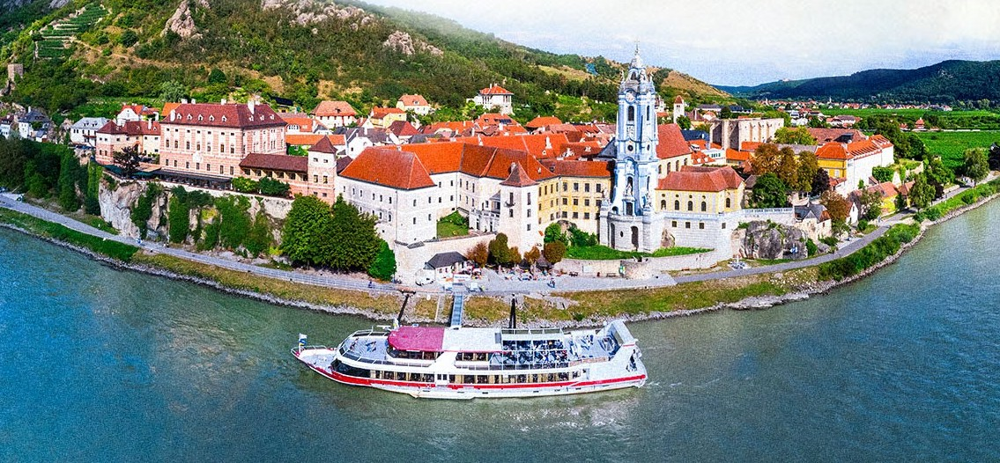
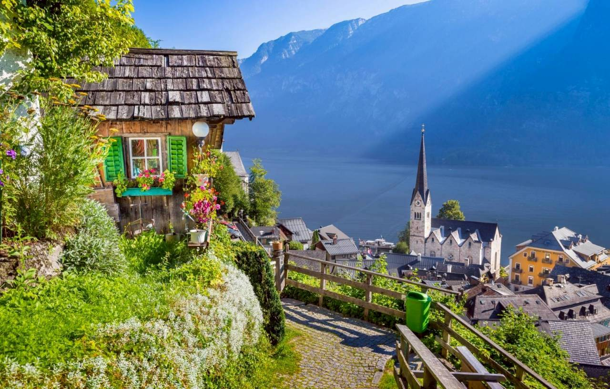
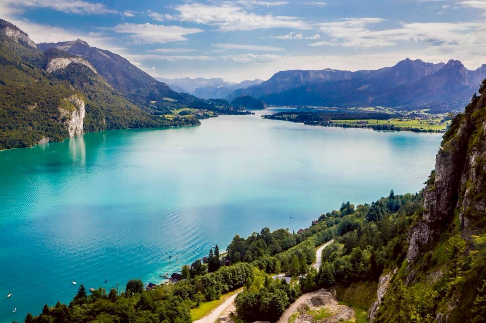
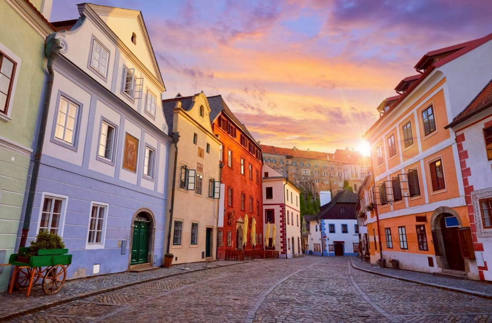
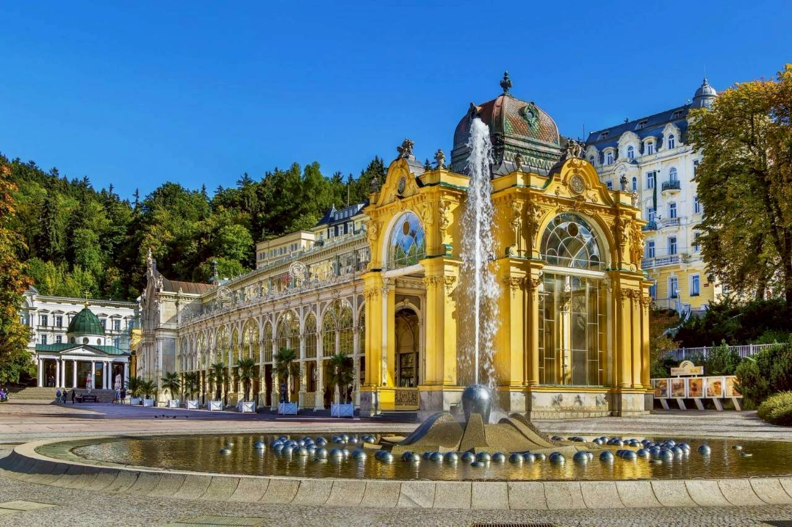
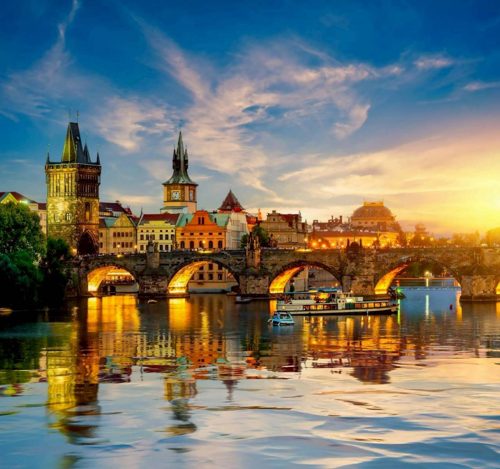
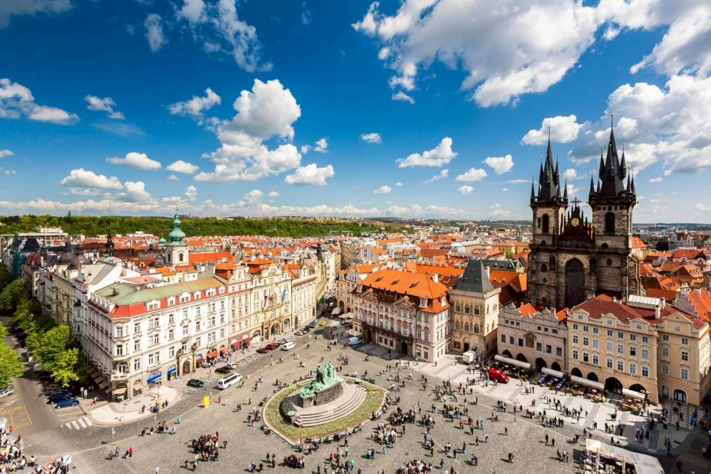
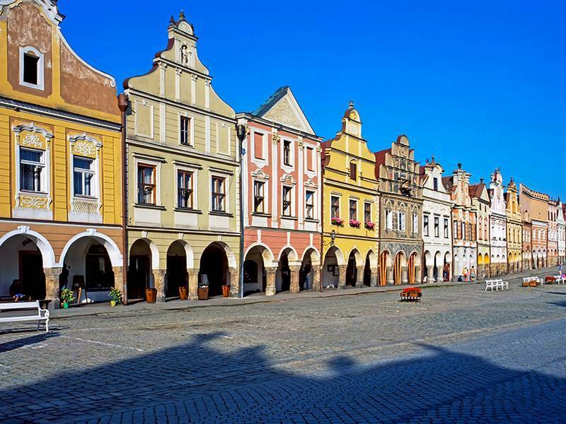
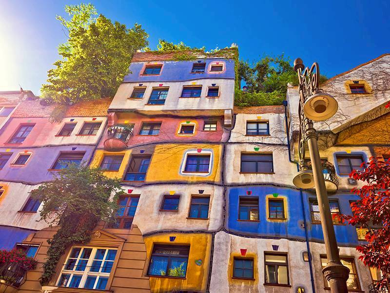
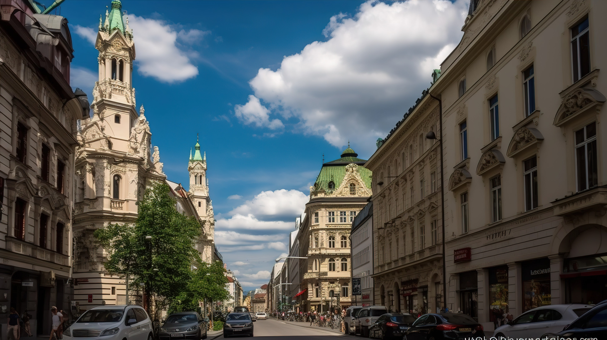

每日行程
Day 1｜啟程飛往維也納
搭乘豪華客機前往奧地利首都， 展開璀璨12天的中歐旅程。

Day 2｜瓦豪河谷
沿著多瑙河航行， 欣賞世界遺產河谷與梅爾克修道院。

Day 3｜哈修塔特
漫步世界最美湖畔小鎮， 感受阿爾卑斯湖區的迷人風景。

Day 4｜國王湖
搭乘遊船深入阿爾卑斯山秘境， 欣賞國王湖如鏡面般的湖光山色與壯麗山峰。

Day 5｜庫倫洛夫
走進捷克最美的童話古城， 漫步紅瓦屋頂與石板街道之間。

Day 6｜瑪麗安斯基
造訪歐洲著名溫泉小鎮， 感受優雅建築與悠閒的度假氛圍。

Day 7｜布拉格古城
探索百塔之城布拉格， 欣賞查理大橋、舊城廣場與天文鐘風采。

Day 8｜布拉格自由活動
享受自由漫遊時光， 深入體驗布拉格迷人的街景與咖啡文化。

Day 9｜泰爾奇
漫步世界文化遺產小鎮， 欣賞彩色文藝復興建築與寧靜廣場。

Day 10｜維也納皇城巡禮
參觀熊布朗宮與霍夫堡皇宮， 感受哈布斯堡王朝的輝煌歲月。

Day 11｜返程之旅
帶著滿滿回憶整理行囊， 準備搭機返回溫暖的家園。

Day 12｜抵達台灣
結束精彩的奧捷璀璨12天旅程， 珍藏屬於中歐的美好回憶。
美食住宿
🍖 奧地利豬肋排
品嚐道地奧地利傳統風味料理。
🥩 捷克烤鴨餐
體驗最具代表性的捷克經典美食。
🏨 精選四星級飯店
舒適住宿與便利地理位置兼具。